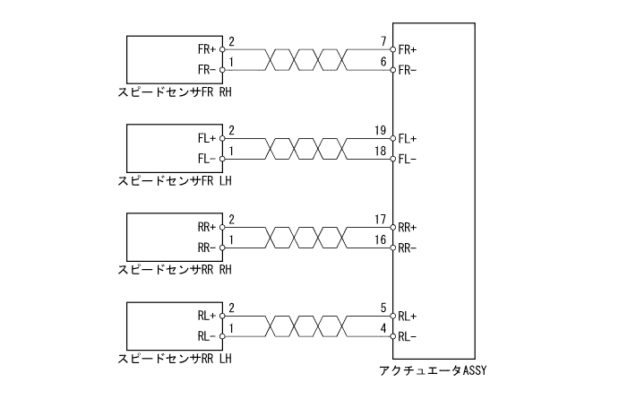
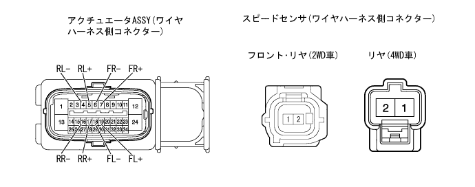
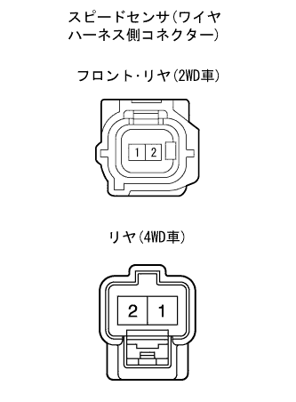

DTC C1235/35 Speed Sensor Front RH Iron Particle Adhesion Malfunction |
DTC C1236/36 Speed Sensor FL Iron Chip Adhesion Malfunction |
DTC C1238/38 Speed Sensor RR Iron Chip Adhesion Malfunction |
DTC C1239/39 Speed Sensor RL Iron Chip Adhesion Malfunction |
)| DTC No. | DTC Detection Condition | DTC Output Related Items |
|---|---|---|
| C1235/35 C1236/36 C1238/38 C1239/39 |
|
|

| Step 1 | Inspect Wire Harness and Connector (Speed Sensor - Actuator Assembly) |
Check that the actuator assembly and speed sensor connectors are properly engaged.
Turn the IG OFF and disconnect the actuator assembly and speed sensor connectors.
Check that the connector case and terminals are free of deformation and corrosion.
Using the SST (Toyota electrical tester), measure the resistance of the wire harness side connectors between the actuator assembly and speed sensor.

| Tester Connection | Condition | Standard |
|---|---|---|
| 7(FR+) - 2(FR+) | Always | Below 1 Ω |
| 6(FR-) - 1(FR-) | ||
| 19(FL+) - 2(FL+) | ||
| 18(FL-) - 1(FL-) | ||
| 17(RR+) - 2(RR+) | ||
| 16(RR-) - 1(RR-) | ||
| 5(RL+) - 2(RL+) | ||
| 4(RL-) - 1(RL-) |
Using the SST (Toyota electrical tester), measure the resistance between the wire harness side connector of the actuator assembly and body ground.
| Tester Connection | Condition | Standard |
|---|---|---|
| 7 (FR+) - Body ground | Always | 10k Ω or higher |
| 6 (FR-) - Body ground | ||
| 19 (FL+) - Body ground | ||
| 18 (FL-) - Body ground | ||
| 17 (RR+) - Body ground | ||
| 16 (RR-) - Body ground | ||
| 5 (RL+) - Body ground | ||
| 4 (RL-) - Body ground |
|
| ||||
| OK | |
| Step 2 | Inspect ABS & Traction Actuator Assembly (Speed Sensor Power Source) |
 |
Disconnect the speed sensor connector.
Using the SST (Toyota electrical tester), measure the resistance between the wire harness side connector of the speed sensor and body ground.
| Tester Connection | Condition | Standard |
|---|---|---|
| 2 (FR+) - Body ground | IG ON | 8 to 14V |
| 2 (FL+) - Body ground | ||
| 2 (RR+) - Body ground | ||
| 2 (RL+) - Body ground |
|
| ||||
| OK | |
| Step 3 | Recheck DTC |
Clear the DTCs. (see)
Turn the IG OFF → ON, drive at a vehicle speed of 20km/h or more for 30 seconds or more, and check that the ABS warning light goes off.
If the ABS warning light remains on, check the DTCs.
| Result | Proceed to |
|---|---|
| Malfunction code (2WD models front, 4WD models) | A |
| Malfunction code (2WD models rear) | B |
| OK | C |
|
| ||||
|
| ||||
| A | |
| Step 4 | Inspect Speed Sensor |
Remove the speed sensor of the relevant wheel and check that the tip is free of foreign matter and damage. (see[Front],[Rear])
| Result | Proceed to |
|---|---|
| OK (front) | A |
| OK (rear) | B |
| NG (front) | C |
| NG (rear) | D |
|
| ||||
|
| ||||
|
| ||||
| A | ||
| ||